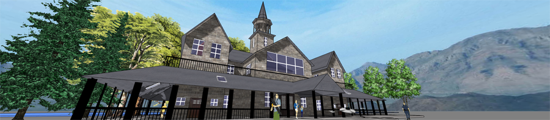

Since I started my own R&D shop in 2008, funding of my research has exceeded $15,000,000 (including subgrants to others but not subgrants from others).
The following are the funded projects and their proposals
(I published most of my funded proposals in the spirit of open source because I believe proposals of funded federal research projects should be
available to the public by default to increase govermental transparency and to benefit junior investigators):
- Principal Investigator,
Learning and Teaching Engineering Design on a "Smart" CAD Platform,
General Motors Grant 34871079, $200,000, 2018-2019
- Principal Investigator,
Change Makers: Crowdsolving the Energy Challenge through Cyber-Enabled Out-of-School Citizen Science Programs,
NSF DRL-1712676, $500,000, 2018-2019 (Proposal)
- Principal Investigator,
Science and Engineering Education for Infrastructure Transformation,
NSF DRL-1721054, $2,899,395, 2017-2021 (Proposal)
- Principal Investigator,
Visualizing Chemistry with Infrared Imaging,
NSF DUE-1626228, $149,993, 2016-2018 Total: $300K
(Proposal)
- Principal Investigator,
Next Step Learning: Bridging Science Education and Cleantech Careers with Innovative Technologies,
NSF DRL-1512868, $1,187,365, 2015-2018
(Proposal)
- Principal Investigator,
SmartCAD: Guiding Engineering Design with Science Simulations,
NSF DRL-1503196, $2,192,610, 2015-2019 Total: $3M
(Proposal)
- Principal Investigator,
Large-Scale Research on Engineering Design Based on Big Learner Data Logged by a CAD Tool,
NSF DUE-1348530, $999,921, 2014-2018 Total: $1.5M
(Proposal)
- Principal Investigator,
SimBuilding: Teaching Building Science with Simulation Games,
NSF DUE-1304485, $599,631, 2013-2016 Total: $900K
(Proposal)
- Principal Investigator,
Constructive Chemistry: Problem-Based Learning Through Molecular Modeling,
NSF DUE-1245356, $88,768, 2013-2015 Total: $250K
(Proposal)
- Principal Investigator,
Mixed-Reality Labs: Integrating Sensors and Simulations to Improve Learning,
NSF IIS-1124281, $958,439, 2011-2014 Total: $1.35M
(Proposal)
- Principal Investigator,
Enhancing Engineering Education with Computational Thinking,
NSF DRL-0918449, $2,191,552, 2009-2012. (Proposal)
- Principal Investigator,
Electron Technologies: Modeling Pico Worlds for New Careers,
NSF DUE-0802532, $898,516, 2008-2011.
In addition to leading the above projects, I have also played a supporting role for the following ones
(that add up to more than $5,000,000):
- Co-Principal Investigator,
Educating Designers for Generative Engineering (EDGE),
NSF IUSE-1918847, $2,180,230, 2020-2024 (Lead: University of Arkansas, PI: Zhenghui Sha).
(Proposal)
- Co-Principal Investigator,
A Fine-Grained Data-Driven Approach to Studying Sequential Decision-Making in Engineering Systems Design,
NSF CMMI-1842588, $225,000, 2018-2020 (Lead: University of Arkansas, PI: Zhenghui Sha).
- Co-Principal Investigator,
Integrated Science Practices Enhanced by Computational Thinking,
NSF DRL-1640054, $2,697,096, 2016-2020 (Lead: Concord Consortium, PI: Sherry Hsi).
I constantly work with researchers around the world on developing research plans and grant proposals.
If you are interested in collaboration, please do not hesitate to contact me.